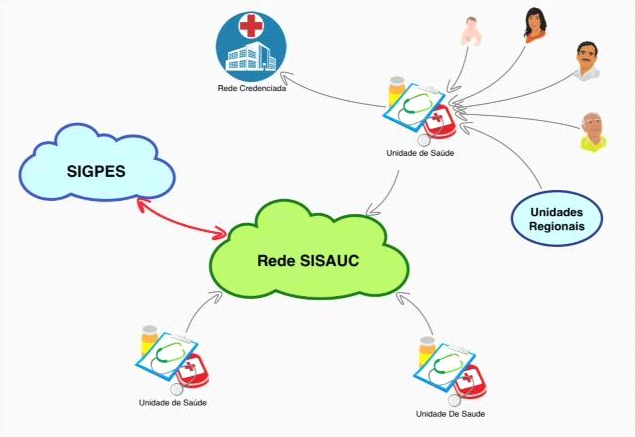

O SISAUC está instalado em 9 servidores que abrigam 22 máquinas virtuais correspondentes aos Regionais do FUNSA, permitindo uma configuração em rede na qual cada Regional do FUNSA é independente dos outros, mas possui sua rede própria de organizações subordinadas.
Em cada Regional do FUNSA, um usuário cadastrado previamente com o Perfil Administrador, inicia o cadastramento de seus usuários locais e dos usuários das organizações subordinadas.
O SISAUC está conectado aos seguintes Sistemas:
SIGPES – Sistema de Gestão de Pessoal (DIRAP)
AGC Aerconsig – Aplicativo para Gerenciamento das Consignações (SDPP)

Fig.1 Concepção geral do sistema.
Com a implantação do Sistema, é possível que as organizações credenciadoras (Regionais do FUNSA) façam o gerenciamento dos prestadores de serviços de saúde credenciados por região.
O Sistema propicia a emissão, impressão, apresentação e auditorias (prospectiva e retrospectiva) das GAB e ARE do Regional do FUNSA e de suas organizações subordinadas.
Desta forma, o Sistema permite a automatização do processo de assistência à saúde complementar da Aeronáutica.